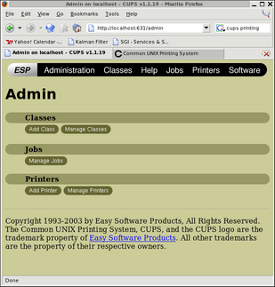
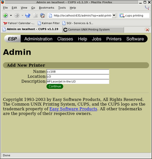
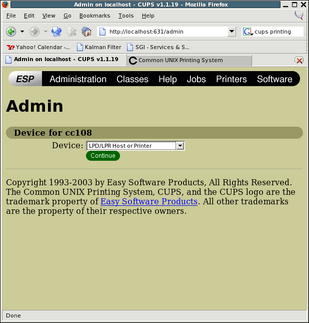
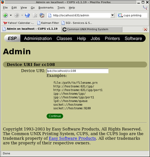
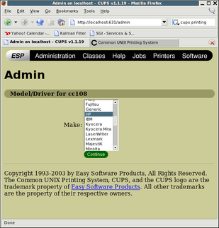
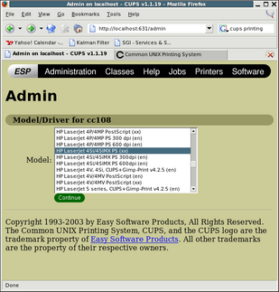
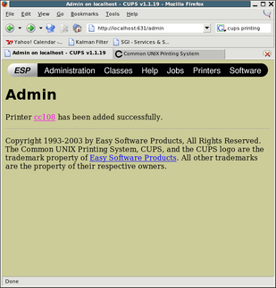

Correction: Hobgoblin *isn't* firewalled, at least from wireless.ubc.ca. All the same, I would recommend doing the port forwarding so that your print job can't be sniffed in transit.
First, make sure lpd is not running on your machine:
service lpd stop chkconfig lpd offNow, establish a connection to hobgoblin, the server running cc108. (Other printers are on printhost. If you want to set up connections to both hosts you'll need to use a different port..)
ssh -N -L 515:hobgoblin.cs.ubc.ca:515 username@cascade.cs.ubc.ca &Note that you'll need to be root on your laptop to forward to port 515. Otherwise, use something like 5515:hobgoblin.cs.ubc.ca:515. Also note that you'll need to substitute your username, and also have ssh configured to authenticate using public key authentication (see man ssh or man ssh-keygen). I've put this line at the end of /etc/rc.d/rc.local
A word about security: Never forward ports over a firewall without first firewalling your laptop. Make sure you use iptables or ipchains to prevent third parties from exploiting your machine as an open relay.
service cups start chkconfig cups onNow we configure cc108. If you want to configure a different printer, you can get its information from /cs/local/generic/lib/LPRng/printcap. Note that most other printers are on printhost. I'll leave cc108-onesided to future work.. :-)
Using your browser, point to http://localhost:631/admin (bet you didn't know you were running a mini-webserver.)
|  Select "Add printer" from the menu. |
|  Give the printer a name. For convenience I recommend giving it the same name as it has in the printcap. The Location and Description boxes are only for convenience-- write whatever you want there. |
|  Select LPD/LPR Host or Printer for the device. |

Enter 'lpd://localhost/cc108'for the device URI. Substitute the actual print queue name you want to use if you're not configuring cc108. If you're not port forwarding, use the actual print host, hobgoblin.cs.ubc.ca or printhost.cs.ubc.ca as the case may be. |
|  Select HP for the Model. |
|  Select HP Laserjet 4Si/4SiMX PS (xx) for the printer driver, assuming cc108. Use the printcap for other queues. Someone correct me if this is incorrect. |
|  You're done! |
{kind=link}
{kind=link}
{kind=link}
{kind=link}
{kind=link}
{kind=link}
{kind=link}